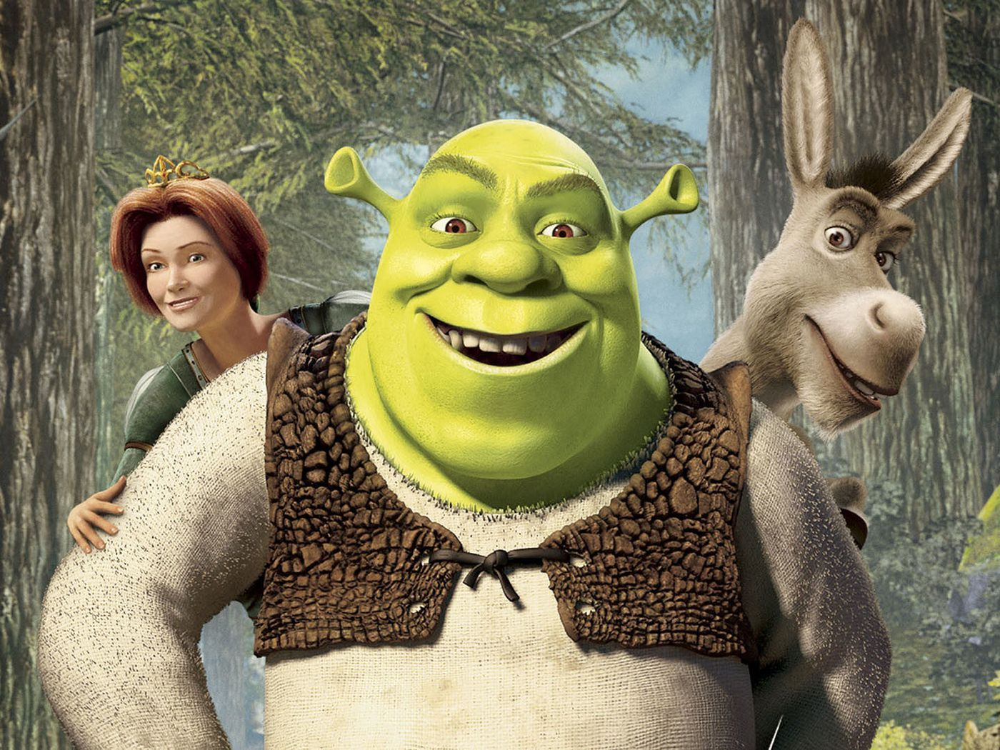
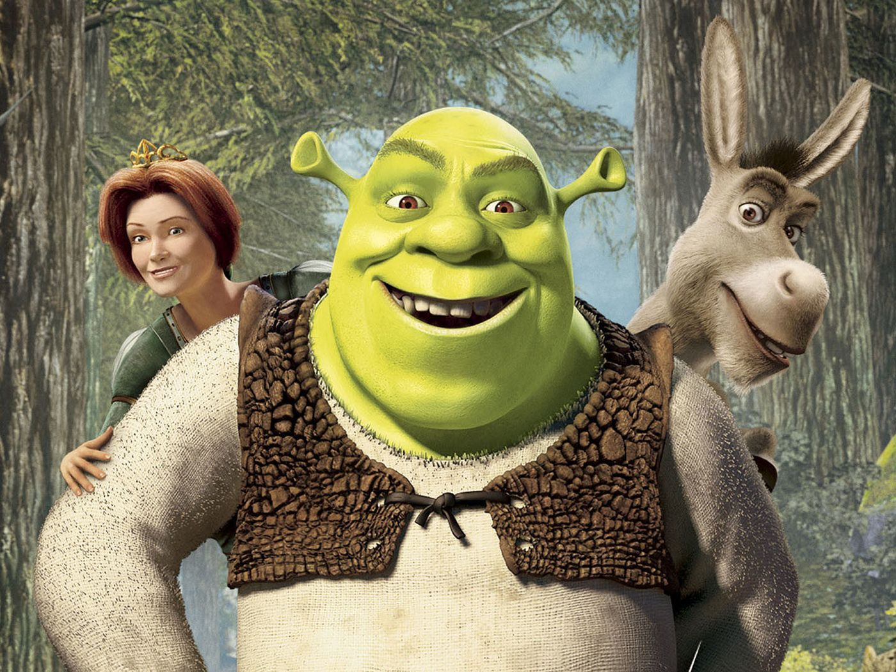

About Shrek
Shrek is an ogre that lives in his Swamp.
Caption
Shrek and Friends
- Fiona
- Donkey
- Gingerbread Man
- Puss in Boots
Memes
Shrek is a very meme-able character. Click on the links below to see the Memes
Shrek is an ogre that lives in his Swamp.
Caption
Shrek is a very meme-able character. Click on the links below to see the Memes